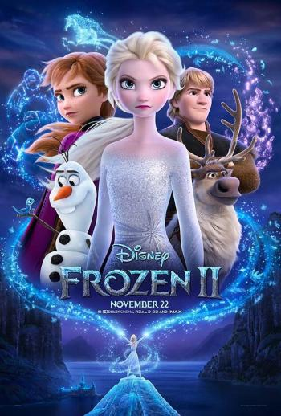
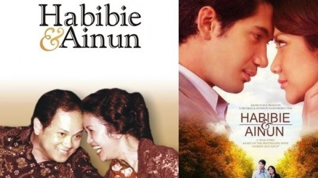

1. END GAME (YULLI NISIA)
Avengers: Endgame is a 2019 American superhero film based on the Marvel Comics superhero team the Avengers, produced by Marvel Studios and distributed by Walt Disney Studios Motion Pictures. It is the sequel to 2012's The Avengers, 2015's Avengers: Age of Ultron, and 2018's Avengers: Infinity War, and the twenty-second film in the Marvel Cinematic Universe (MCU). It was directed by Anthony and Joe Russo and written by Christopher Markus and Stephen McFeely, and features an ensemble cast including Robert Downey Jr., Chris Evans, Mark Ruffalo, Chris Hemsworth, Scarlett Johansson, Jeremy Renner, Don Cheadle, Paul Rudd, Brie Larson, Karen Gillan, Danai Gurira, Benedict Wong, Jon Favreau, Bradley Cooper, Gwyneth Paltrow, and Josh Brolin. In the film, the surviving members of the Avengers and their allies attempt to reverse the damage caused by Thanos in Infinity War.The film was announced in October 2014 as Avengers: Infinity War – Part 2, but Marvel later removed this title.

2.CRAZY RICH ASIANS (SYAHLA ARFIAN)
Crazy Rich Asians is a 2018 American romantic comedy film directed by Jon M. Chu, from a screenplay by Peter Chiarelli and Adele Lim, based on the 2013 novel of the same name by Kevin Kwan. The film stars Constance Wu, Henry Golding, Gemma Chan, Lisa Lu, Awkwafina, Ken Jeong, and Michelle Yeoh. It follows a Chinese-American professor who travels to meet her boyfriend's family and is surprised to discover they are among the richest in Singapore.The film was announced in August 2013 after the rights to the book were purchased. Much of the cast signed on in the spring of 2017, and filming took place from April to June of that year in parts of Malaysia, New York City, and Singapore. It is the first film by a major Hollywood studio to feature a majority cast of Asian descent in a modern setting since The Joy Luck Club in 1993. Despite praise for that, the film did receive some criticism for casting biracial actors over fully ethnically Chinese ones in certain roles.

3. Frozen 2 (by Anggita Chaerani)
Frozen 2, one of the most beautifully animated films of the decade, filled with stunning visual pyrotechnics and incredible attention to detail.
From the Academy Award-winning team—directors Jennifer Lee and Chris Buck, producer Peter Del Vecho and songwriters Kristen Anderson-Lopez and Robert Lopez—and featuring the voices of Idina Menzel, Kristen Bell, Jonathan Groff and Josh Gad, Walt Disney Animation Studios’ “Frozen 2” opens in U.S. theaters on Nov. 22, 2019.
A little sneak peek: Why was Elsa born with magical powers? The answer is calling her and threatening her kingdom. Together with Anna, Kristoff, Olaf and Sven, she'll set out on a dangerous but remarkable journey. In "Frozen," Elsa feared her powers were too much for the world. In "Frozen 2," she must hope they are enough.

4. Habibie and Ainun (by Desy Rafika Intan Sembiring)
Habibie & Ainun is an Indonesian biopic drama film which was released on December 20, 2012. The film stars Reza Rahardian, Bunga Citra Lestari and Tio Pakusadewo. At its launch, the film was witnessed by the 6th President of the Republic of Indonesia, Susilo Bambang Yudhoyono, accompanied by the Governor of the 16th Special Capital Region of Jakarta, Joko Widodo, and by the film's main character himself, the 3rd President of the Republic of Indonesia, Bacharuddin Jusuf Habibie . The film is based on a memoir written by Habibie about the story of his life with his late wife, Hasri Ainun Habibie, in the book Habibie and Ainun.Rudy Habibie is an aircraft genius who has a big dream: to serve the Indonesian people by making airplanes to unite Indonesia. While Ainun is a bright young doctor with a wide open career path for him.